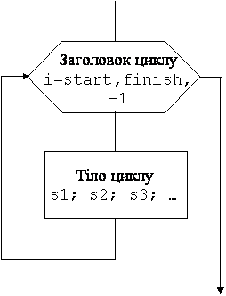

Ќазад
«м≥ст
¬перед
—труктура оператору циклу з параметром
ќператори циклу з параметром бувають двох тип≥в:
- « параметром i, що зб≥льшуЇтьс€ в≥д start до finish (з кроком 1)
For i:=start to finish do
Begin s1; s2; s3; Е end;
- « параметром i, що зменшуЇтьс€ в≥д start до finish (з кроком -1)
For i:=start downto finish do
Begin s1; s2; s3; Е end;
“ут:
For, to, downto, do Ц зарезервован≥ слова.
i Ц зм≥нна
start, finish Ц стал≥, зм≥нн≥ або вирази
Begin, end Ц операторн≥ дужки
s1; s2; s3Ц будь-€к≥оператори
“ерм≥нолог≥€
- ѕараметр циклу (у приклад≥ i), будь-€ка зм≥нна ц≥лого (byte, Integer, word, longint, Е) або символьного типу (char).
- ѕочаткове значенн€ параметру (у приклад≥ start) Ц стала, зм≥нна або вираз того ж типу, що й параметр.
- ≥нцеве значенн€ параметру (у приклад≥ finish) Ц стала, зм≥нна або вираз того ж типу, що й параметр.
- «аголовок циклу указуЇ, ск≥льки раз≥в буде виконуватись т≥ло циклу.
«аголовок циклу:
- For i:=start to finish do або
- For i:= start downto finish do
- “≥ло циклу Ц оператори, що повторюютьс€.
“≥ло циклу Ц Begin s1; s2; s3; Е end;
- ≥льк≥сть витк≥в циклу Ц к≥льк≥сть повторень т≥ла циклу.
Ќаписаний вище оператор ≤ типа на блок-схем≥ в≥дображаЇтьс€ так:

Ќаписаний вище оператор ≤I типа на блок-схем≥ в≥дображаЇтьс€ так:

¬ першому оператор≥ крок дор≥внюЇ 1, а в другому Ц1.
«ауваженн€
- ѕараметр циклу автоматично по черз≥ приймаЇ ц≥л≥ значенн€ в≥д start до finish (дл€ символьних параметр≥в приймаЇ значенн€ наступного символу з таблиц≥ ascii).
- —к≥льки значень прийме параметр циклу в≥д start до finish, ст≥льки раз≥в виконаЇтьс€ т≥ло циклу.
- ¬ оператор≥ з параметром, що зб≥льшуЇтьс€ (For i:=start to finish do), щоб виконувалось т≥ло циклу потр≥бно, щоб start<=finish. якщо start >finish, то помилки не буде але т≥ло циклу виконуватись не буде.,
| ‘рагмент програми | –езультат роботи |
|---|
For i:=5 to 10 do
write(С*Т); | ****** |
For i:=10 to 5 do
write(С*Т); | “акий фрагмент програми н≥чого не виведе на екран. |
- ¬ оператор≥ з параметром, що зменшуЇтьс€ (For i:=start downto finish do), щоб виконувалось т≥ло циклу потр≥бно, щоб start>=finish. якщо start < finish, то помилки не буде але т≥ло циклу виконуватись не буде.
| ‘рагмент програми | –езультат роботи |
|---|
For i:=5 downto 1 do
write(С*Т); | ***** |
For i:=1 downto 5 do
write(С*Т); | “акий фрагмент програми н≥чого не виведе на екран. |
- ѕараметр циклу не можна зм≥нювати у т≥л≥ циклу. ѕрограма може зациклитись або де€к≥ в≥тки циклу виконуватись не будуть.
Ќаприклад:
| ‘рагмент програми | –езультат роботи |
|---|
For i:=1 to 3 do
Begin
write(i,Т С); i:=5;
end;
|
ѕрограма зациклитьс€, вона надрукуЇ 1, а пот≥м буде завжди друкувати 6
1 6 6 6 6Е..
|
For i:=1 to 3 do
Begin
write(i,Т С); i:=3;
end;
|
÷€ програма надрукуЇ т≥льки число 1, бо виконаЇ один виток, зам≥сть трьох
|
- якщо програма зациклилась, потр≥бно натиснути CtrlЦbreak або CtrlЦAlt-Delete викликати ƒиспетчер задач та зн€ти задачу.
- якщо start та finish Ц вирази, то њх значенн€ обчислюютьс€ один раз, перед початком циклу ≥ зм≥ненн€ њх у т≥л≥ циклу не впливаЇ на к≥льк≥сть витк≥в циклу.
| ‘рагмент програми | –езультат роботи |
|---|
F:=3;
For i:=1 to F do
Begin
write(Т*С); F:=10;
end;
|
***
ѕрограма надрукуЇ 3 з≥рочки, хоч у т≥л≥ циклу Ї оператор F:=10.
|
Ќазад
«м≥ст
¬перед